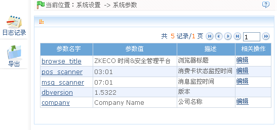

9.2 系统参数
单击【系统设置】 【系统参数】，进入系统参数页面：
【系统参数】，进入系统参数页面：

系统参数主界面显示系统参数列表：参数名称、参数值、描述、相关操作。各参数描述如下：
browse_title：浏览器标题，修改后刷新页面直接生效。
pos_scanner：用户可在此设置时间。每天的这个时间系统将自动扫描卡信息列表，判断列表中的卡是否过期，若过期，则将该卡的状态修改为过期。卡的有效期设置请参见8.6卡类资料。
msg_scanner：消息监控时间，格式为hh:mm，在指定时刻对员工生日和转正日期进行监控扫描，如有符合人事公告类别设置的生日和转正日期则自动生成公告记录。
dbversion：显示数据库版本，不可编辑。
company：公司名称，为后续版本做兼容用，如部分需要用到显示公司名称的地方。